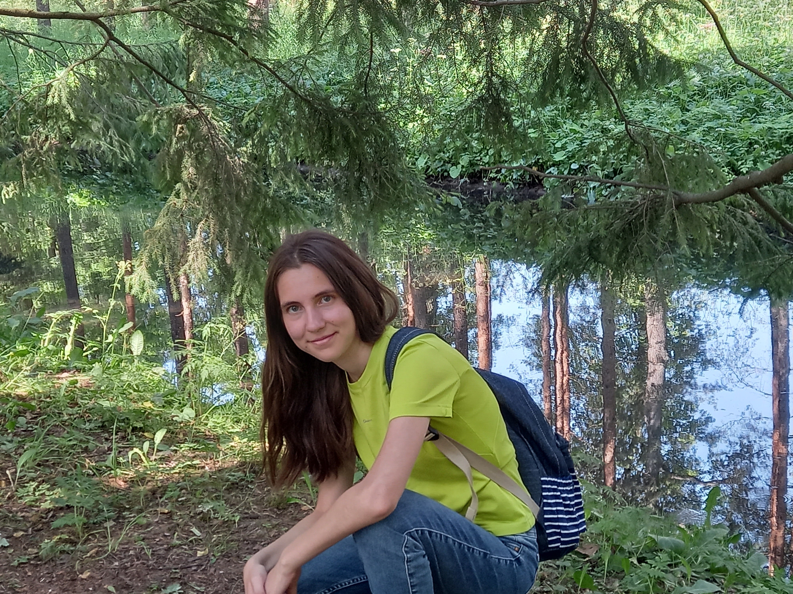
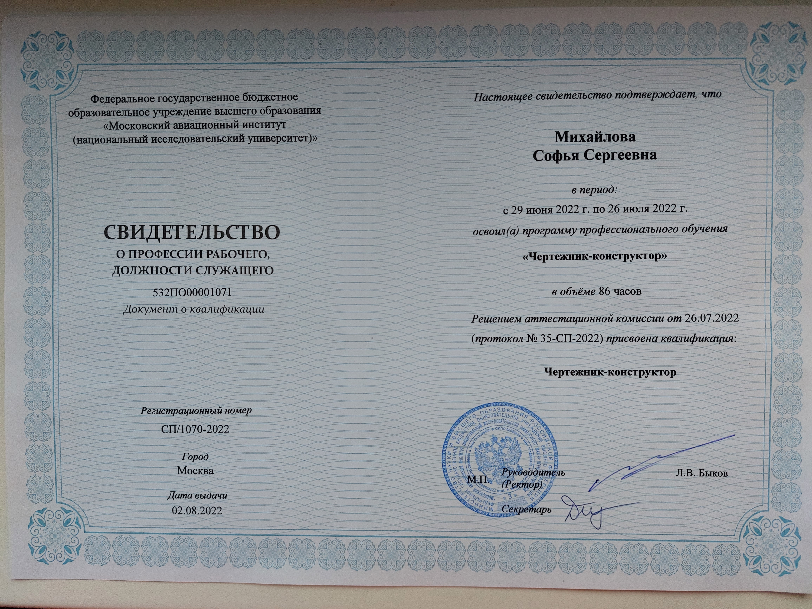
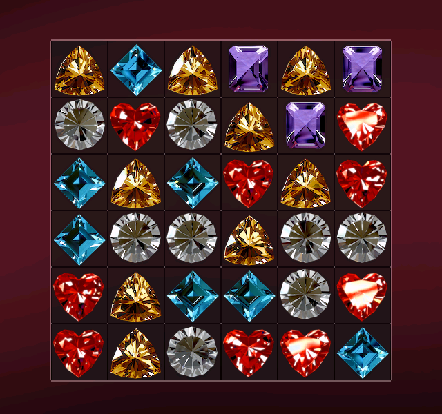
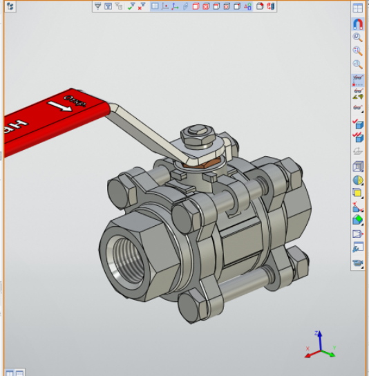
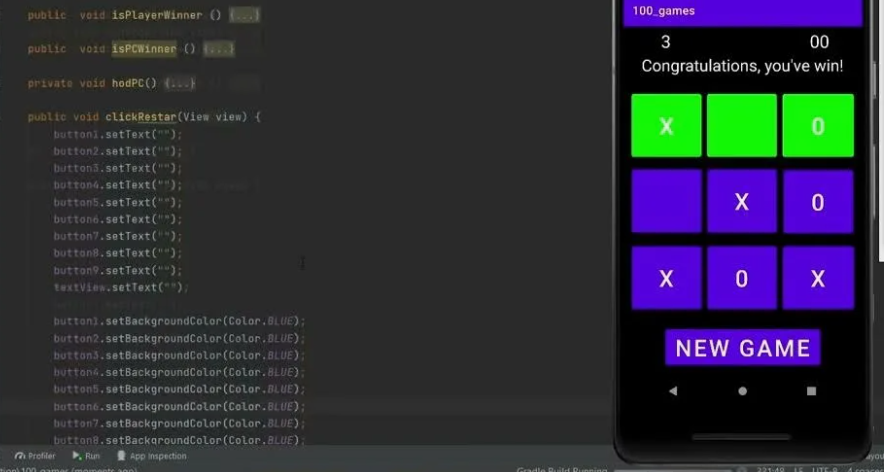

Обо мне

Здравствуйте! Меня зовут Михайлова Софья Сергеевна. Я инженер-конструктор с глубокими знаниями в области САПР. Моя страсть — превращать идеи в точные чертежи и 3D-модели, которые воплощают инновации в реальность.
Я всегда открыта к новым вызовам и готова обсудить возможности сотрудничества, будь то стажировка, индивидуальные проекты или удаленная работа.
Образование
- Бакалавриат: Московский авиационный институт (МАИ), специальность в области инженерии.
- Магистратура: Сейчас учусь в магистратуре МАИ, углубляя знания в проектировании и конструкторском деле.
- Сертификат: Чертежник-конструктор, подтверждающий мои навыки в создании точных технических чертежей.
Опыт и Навыки
Во время обучения в МАИ я выполнила множество заданий: от простых чертежей до сложных сборок и 3D-моделирования. Это включало работу с реальными проектами, такими как проектирование авиационных компонентов, механических систем и прототипов.
Ключевые навыки:
- AutoCAD: Создание 2D-чертежей и планов.
- Inventor: 3D-моделирование и анимация сборок.
- T-Flex: Параметрическое проектирование для гибких решений.
- Дополнительно: Работа с SolidWorks, анализ прочности и сборка прототипов.
Интересы и Цели
Я увлекаюсь инновациями в инженерии, особенно в авиационной и машиностроительной отраслях. Люблю решать сложные задачи, оптимизировать процессы и создавать продукты, которые улучшают жизнь.
В будущем хочу развиваться в области цифрового проектирования, включая интеграцию ИИ в САПР. Рассматриваю стажировки для получения практического опыта и индивидуальные проекты для творческого самовыражения.
Если у вас есть интересный проект — давайте обсудим! 😊
Мои Достижения и Проекты



